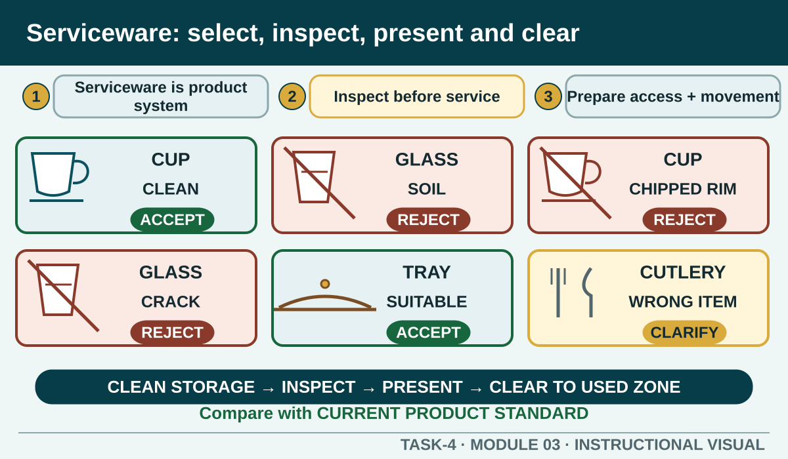

Choose and handle serviceware that suits the order, supports safe service and meets the current workplace presentation standard.
Learning intention
What success looks like
I can explain how the product, customer request and service method affect serviceware choice.
I can inspect serviceware for cleanliness, condition and suitability before use.
I can connect outlet layout and serviceware placement with safe access and efficient service.
I can describe a source-safe serving and clearing plan while leaving exact techniques to teacher demonstration.
Core ideas
Build the complete picture
1
Serviceware is part of the product system
2
Inspect before the item enters service
3
Prepare the outlet for people and movement
4
Match every item to the order and service stage
Visual explanation
Serviceware: select, inspect, present and clear

Students use observable evidence and the current product standard to accept, reject or clarify each item.
Worked example
Serviceware is part of the product system
Serviceware includes the cups, glasses, plates, bowls, trays, cutlery and other approved items used to present, carry or consume food and beverages. The correct choice supports the product's portion, temperature, stability, appearance, accompaniments and safe handling.
Two beverages may have similar volume but different temperature, garnish or handling needs. The current product standard, not visual similarity, determines the serviceware.
Question the room
A cup has a small chip near the rim but otherwise looks clean. What should happen?
Use it for a less expensive drink.
Remove it from service through the workplace process and report the damage as required.
Turn the chip away from the customer.
Apply
Beverage and serviceware match
The venue serves water, chilled juice, tea and teacher-directed espresso beverages. Exact sizes and local presentation standards come from the authorised service procedure.
Match four service needs.
Check the handling and suitability explanation.
Write a five-point pre-service serviceware check.
Exit ticket
Action · evidence · next step
For a teacher-issued order, justify the serviceware and setup you would select, the checks you would complete and how you would keep the order identifiable through service and clearing.
One action I would take
The evidence I would check
The person or source I would confirm with
My next improvement
1 of 8
Speaker notes and delivery prompts
Open with this purpose: Choose and handle serviceware that suits the order, supports safe service and meets the current workplace presentation standard.
Use Serviceware is part of the product system to connect prior learning to the first observable workplace decision.
Model Serviceware is part of the product system by walking through this supplied example: Two beverages may have similar volume but different temperature, garnish or handling needs. The current product standard, not visual similarity, determines the serviceware.
Ask: A cup has a small chip near the rim but otherwise looks clean. What should happen? Confirm the strongest response as Remove it from service through the workplace process and report the damage as required..
Listen for this misconception: Not yet. Product price does not change the safety and presentation problem.
Move into Beverage and serviceware match, then collect the saved response and finish with the source boundary: Authorised source note: Serviceware selection, outlet preparation, customer access, serving, clearing and waste are source-supported. Exact table setup, carrying technique, item range and presentation standard remain local teacher-controlled practice. Source references: TEACHER-T4-TOPICS, TGA-SITHFAB024, TGA-SITHFAB027.